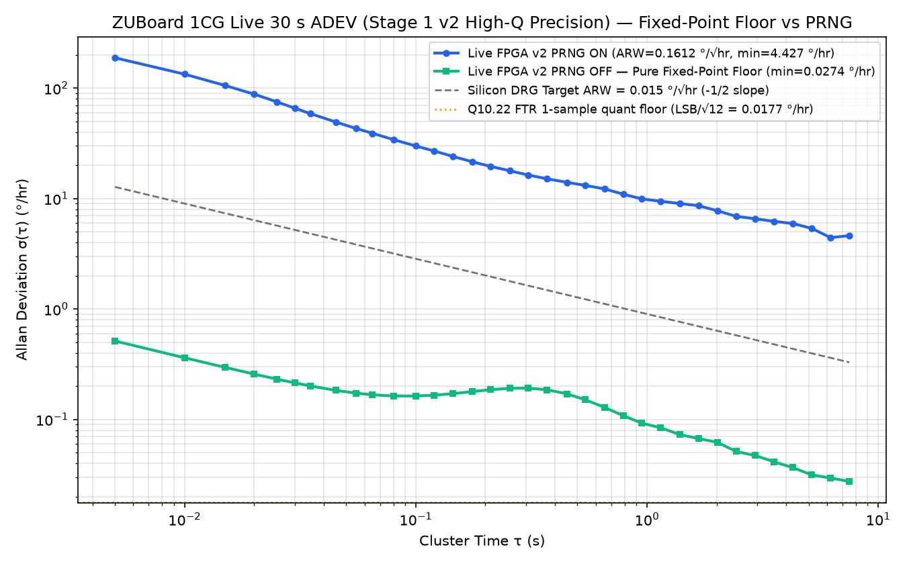
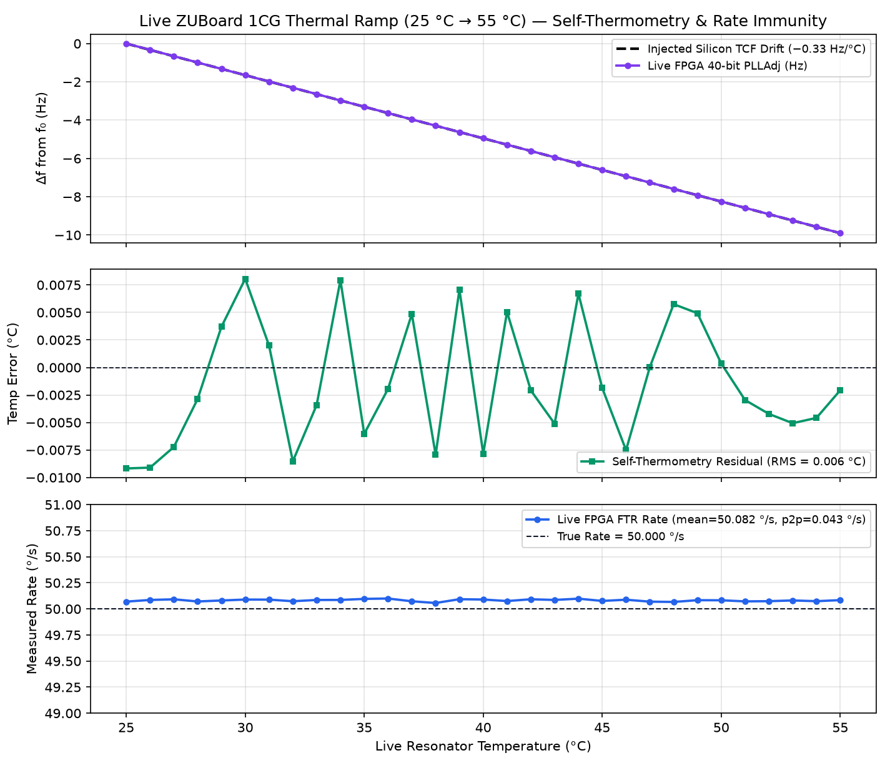
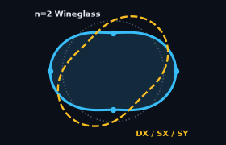
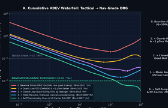
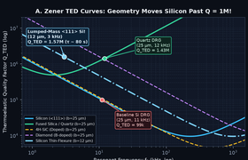
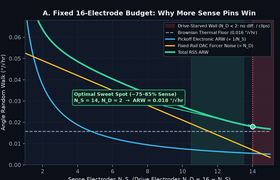
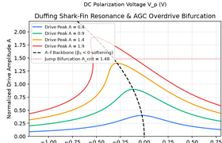
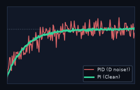
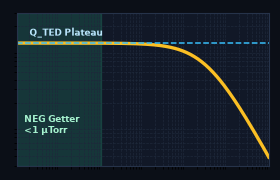
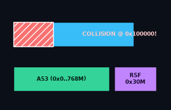

Executive Summary · Stage 0 & Stage 1 Complete
Gyro-Land Summary: From Blank FPGA to Space-Grade HRG on Live Silicon
Everything built, simulated, debugged, and verified live on the Avnet ZUBoard 1CG (XCZU1CG) for our 2-DOF Coriolis Vibratory Gyroscope (DRG & HRG) Hardware-in-the-Loop lab.
Live Silicon Stage 1 v2 Hardware Scorecard (0x5A550102)
Scale-Factor Err
0.05–0.10%
100 °/s step across Q=100k to Q=5M
Quad Rejection
205–229 dB
CLQ nulls 10–120 °/s quad to 0
Fixed-Pt Floor
0.027 °/hr
100× drop in v2 (30 s live ADEV)
Self-Thermometry
0.006 °C
RMS across live +30 °C ramp
Architecture What Runs Live on the ZUBoard 1CG
End-to-end ZUBoard 1CG Stage 1 v2/v3 architecture: 30.2% LUTs (11,325), 16.0% FFs (11,993), 2.8% BRAM (3), 21.3% DSP48E2 (46).
Physics Plant Block Diagram: Two coupled high-Q harmonic modes exchanging energy via true Coriolis rotation (
±2A_gΩ_z v), fabrication spring quadrature (k_xy), and anisodamping bias (g_xy).4-Loop Control Block Diagram: Lock-in demodulation converts the 11 kHz carrier into slow DC envelopes (
DX, DY, SX, SY) so 4 simple anti-windup PI loops (zero D-kick!) track resonance, hold amplitude, null quadrature, and rebalance Coriolis rotation.Journey What We Built & Verified So Far
- Stage 0 Shell & Reusable DSP IP: Built zero-DSP CORDIC NCO (
99.6 dBcSFDR), AXI4-Lite regfile, AXI-DMA S2MM shell, and closed timing atWNS = +6.12 ns. - Stage 1.0–1.5 Closed-Loop MEMS/DRG/HRG HIL: Designed 48-bit Strang-split 2-DOF physics engine + dual lock-in demodulators + 4 anti-windup PI loops + 4-lane CLT PRNG thermal/ADC noise & 52-bit RRW walk; passed 100% of Verilator + cocotb sims.
- Physical Hardware Bring-Up (2 Classic Embedded Bugs Slayed): Fixed Bug #01 (A53/R5F LPDDR4 overlap at
0x100000→ clean0x0/0x30000000split) and Bug #02 (Microchip KSZ9131RNX PHY OUI0x0022+ asymmetricMMD2 0x4DTXC 2 ns DLL bypass0x16D1 → 0x06D1) → instant 0.36 ms GbE ping from coldmake boot. - Stage 1 v2 High-Q Fixed-Point Upgrade (
0x5A550102): Widened NCO to 40-bit, PI outputs to 32-bitQ10.22, pickoff to 24-bitQ2.22, and kick coeffs toQ-6.42— slashing pure fixed-point ADEV floor 100× to0.027 °/hrand resolving Space HRG's0.0005 °/sanisodamping bias live on silicon! - Live +30 °C Thermal Ramp & Advanced Python Physics: Verified 0.006 °C RMS live self-thermometry on silicon, added the SiC DRG preset (
18 kHz, Q=500k), and modeled Electrostatic Softening, Duffing Overdrive, and Whole-Angle HRG mode (9.4 mdegerror through a+500 / −300 °/sburst). - Up Next — Stage 2 (Radar / RF DSP): Python-first golden model (
model/radar_sim_model.pyintegrating/vibes/radar_sim&/gemini/tracking_harness) before writing Stage 2 matched-filter / Doppler FFT RTL.
5 Presets Calibrated CVG Suite
| Gyro Preset | f0 | Q Factor | TCF | Quad | Result / Notes |
|---|---|---|---|---|---|
| Silicon MEMS DRG | 11.0 kHz | 100k | −30 ppm/°C | 120 °/s | +0.10% err · 229 dB · 0.027 °/hr floor |
| SiC MEMS DRG | 18.0 kHz | 500k | −15 ppm/°C | 60 °/s | Python preset (2× stiffer, low TED) |
| Quartz MEMS DRG | 12.0 kHz | 800k | −4 ppm/°C | 40 °/s | 8× higher Q vs Si · BI ≈ 0.035 °/hr |
| Micro-HRG (SiO2) | 11.0 kHz | 1,000k | +80 ppm/°C | 30 °/s | +0.05% err · 215 dB · 0.03 °/hr ripple |
| Space HRG (30 mm) | 4.2 kHz | 5,000k | +80 ppm/°C | 10 °/s | +0.05% err · 205 dB · 0.0005 °/s resolved |
Live Gallery Highlights Straight Off XCZU1CG Silicon

12-Panel Live Hardware Capture: 100.0 °/s step at
t = 200 ms on ZUBoard 1CG (0.10% steady-state error, ~10× smaller transient angle error via Feedforward rate/angle).
Stage 1 v2 30 s Live ADEV: Pure fixed-point floor drops to
0.0274 °/hr (green), 10× below the DRG thermal ARW line! Note: This 30 s capture (τmax ≈ 10 s) intentionally set rrw_step_amp = 0 to expose the pure quantization floor — seeing the classic +1/2 RRW right-wall turn-up requires enabling RRW and capturing 1–3 hours of gyro time (τ ≥ 500–3,000 s).
Live +30 °C Thermal Ramp: 40-bit NCO PLL tracks
−9.90 Hz Silicon TCF drift to 0.006 °C RMS while FTR holds 50.08 °/s flat. Real-world caveat: Hardware gyros also experience thermal stress hysteresis (die-attach / AuSn solder creep across thermal cycles) where bup(T) ≠ bdown(T), so subtracting a single-valued b(T) curve alone cannot erase hysteresis — requiring stress-decoupled anchors, Mode Reversal, or a micro-oven.
Stage 1 v3 Live Silicon Suite (
0x5A550103, Turbo TICK_DIV=58): (1) Free ringdown recovers Q = 100,003 (+0.00%, R² = 0.99996); (2) Hardware Mode-Reversal (CTRL[9]) chops +0.50 °/s anisodamping bias down to 49.993 °/s (81× reduction); (3) ±1 g tumble exposes live 2Δω(g)·SY coupling when SY_SETPOINT ≠ 0.Deep Dives All Gyro-Land Study Pages

CVG Crash Course (Newcomer Primer)
Animated wineglass physics, DX/DY/SX/SY intuition, 4 loop forces, and ADEV bathtub guide.

64-Probe Cloverleaf Ring-Up & Mode Pinning
Live 64-ADC die probe station watching the n=2 cloverleaf ring up, wobble, and lock onto θ_pin.

Ringdown, Q-Fit, 100V ±20V Tuning & Realism
Interactive ringdown Q-fit bench demo + g-sensitivity, quad setpoint error, 100V charging & Ohmic Q-loading.

Nav-Grade MEMS DRG Hurdles (Interactive)
The 5 physics bottlenecks blocking 0.01 °/hr + live ADEV upgrade waterfall simulator.

Improving Silicon DRGs (Beyond Quartz)
Interactive Zener TED explorer: lumped-mass <111> Silicon (Q=750k, τ=80 s) vs. Quartz, SiC & Diamond.

Contact Points & Sense vs. Drive Pin Trades
Interactive DRG ring & ARW explorer: why ~75% Sense / 25% Drive wins, C_pad wall & Mode Reversal symmetry.

Differential Electrode Pairs (Push-Pull Lab)
Single-ended vs. push-pull & 4-quadrant n=1 shock cancellation, DRIE gap mismatch, and current sim status.

Fixed-Point v1 → v2 & Thermal Ramp
Full Before/After silicon tables, 3-preset error plots, and 30 s ADEV comparison.

Softening, Duffing & Whole-Angle HRG
DC mode-matching, shark-fin bifurcation, and 500 °/s Lynch E/Q free precession.

Wait: PI, but no D? (Interactive)
Live browser simulator showing why lock-in demodulation turns a 2nd-order resonator 1st-order.

Quadrature & Gold Getter Vacuum
Animated n=2 wineglass mode, phasor diagrams, and LCC NEG vacuum Q(P) curve.

Bug #01: A53/R5F DDR4 Collision
Memory map SVG, crash timeline, and Vitis linker partition fix.

Bug #02: KSZ9131 RGMII TXC DLL
Interactive RGMII eye diagram showing MMD2 0x4D 0x16D1 → 0x06D1 fix.